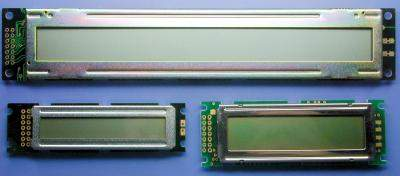
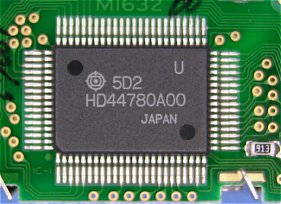
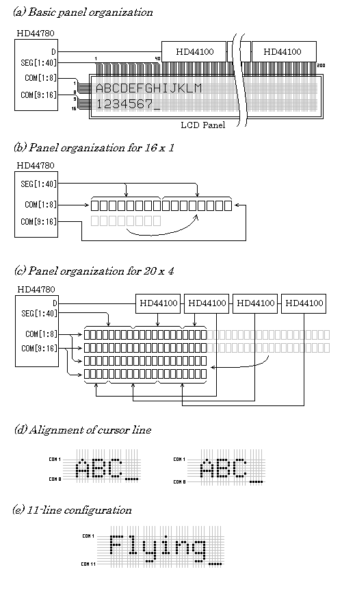
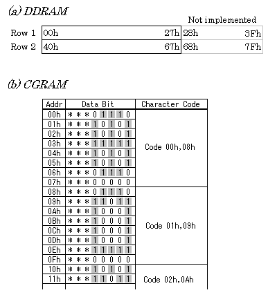
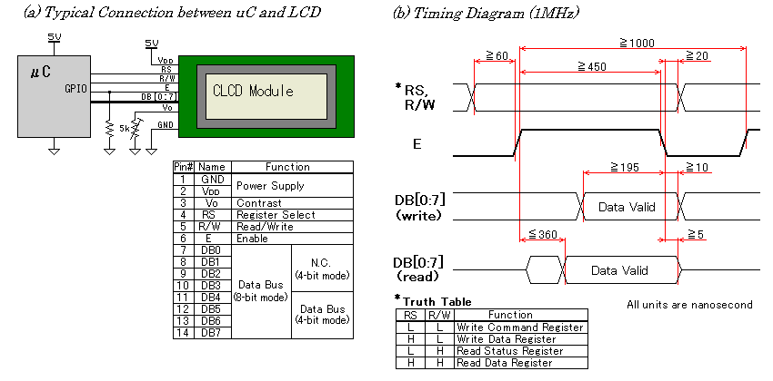
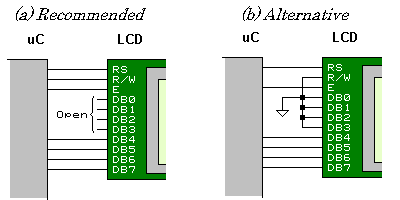
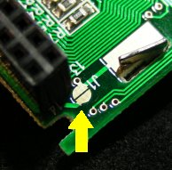

キャラクタLCDモジュールの使いかた
2010. 12. 1

キャラクタ液晶ディスプレイ(CLCD)は、電子機器の表示デバイスとしてよく使われてきました。ドット・マトリクス表示による任意の文字表示や非常に少ない消費電力という特徴は、電子機器の高機能化に貢献し、特にポータブル機器に適したものとなっています。また、その使いやすさから電子工作においても7セグLEDに並んでよく使われる表示デバイスの一つです。
HD44780の機能

HD44780は、80年代前半に日立製作所(現在は、ルネサス エレクトロニクス)から発売されたCLCD用のコントローラICです。現在、ほぼ全てのCLCDモジュールでHD44780またはその互換ICが使用されています。したがって、CLCDの使い方を理解するには、HD44780の機能を理解することが必要十分条件となります。HD44780は主に次のような特徴を持ちます。
- ドット・マトリクスLCDコントローラ
- MPUにバス接続してコマンドによる制御が可能
- 80文字(40桁×2行)分の表示データ・バッファを内蔵
- キャラクタ・ジェネレータを内蔵
- LCDドライバを内蔵しLCDパネルを直結駆動可能
つまり、ワン・チップでCLCDモジュールを作れるというもので、当時は画期的なICでした。そのため、市場を一気に押さえ、CLCDコントローラの事実上の標準として長い間君臨するに至っています。HD44780は、発売から四半世紀以上経った現在も当初の仕様のまま広く使われ続けています。それだけ完成度が高かったということなのでしょうが、これは専用デジタルICとしては希有なことです。
内部ブロック
図1. HD44780の機能ブロック図

図1にHD44780の簡略化した機能ブロック図を示します。
命令デコーダ
命令レジスタにデータが書き込まれると、その命令に従って内部処理を行います。
DDRAM
表示データ・バッファ。80バイトの容量があり、40桁×2行分の表示データを保持することができます。
CGROM/CGRAM
キャラクタ・ジェネレータ。ROM部には標準フォントのほか、マスク・オプションで任意のキャラクタを設定することもできます。RAM部は5×64ビットの容量があり、8ライン・モードなら8キャラクタ分のパターンを保持することができます。
アドレス・カウンタ
次のデータ転送で読み書きされるDDRAMまたはCGRAMのアドレスを保持します。
LCDドライバ
内蔵のLCDドライバは16本のコモン(COM)出力と40本のセグメント(SEG)出力を持ち、HD44780単体で8桁のLCDパネルを制御できます。
LCDパネルの構成
図2. いろいろなパネル構成

HD44780単独で可能なパネル構成は、8桁×2行です。これを超える桁数のパネルでは、必要に応じてセグメント拡張ドライバ(HD44100)を追加することにより、最大40桁まで対応することができます(図2a)。また、次に示すようにLCDパネルの配置を組み替えることにより、拡張ドライバを省いたり、行数を増やすなど柔軟なパネル構成が可能です。
16桁×1行パネル
本来は1行モード(COM9〜COM16を使用しない)で拡張ドライバを1個使いますが、8桁×2行モードの2行目を右に移動することにより1チップで済みます(図2b)。このため、8桁×1行パネルを除き、1行モードが使用されることは殆どありません。
20桁×4行パネル
4行LCDパネルでは、2行モードの右半分を下に折り返すことで4行として使用しています(図2c)。DDRAM上の第1行はパネル上で1行目と3行目に、第2行は2行目と4行目にそれぞれ分割して割り当てられます。
40桁×4行パネル
HD44780を2チップ使用した最大構成で、40桁×2行を上下に連結した形になります。それぞれのHD44780のホストI/Fは、E信号以外が共通に接続されています。
カーソル・ライン
各行の最下ラインには下線カーソルが表示されますが、このラインは製品によりキャラクタに密着している場合と離れている場合とがあります(図2d)。このため、全ラインを使用したユーザ文字は、意図したパターンにならないことがあります。
11ライン・モード
LCD駆動信号のCOM1〜COM11だけを使用し、COM12〜COM16を使用しないモードです。文字の高さが10ラインになるので、g、j、p、q、yなど下にはみ出す文字を無理なく表現することができます(図2e)。しかし、2行モードが使えないので、汎用モジュールでは使われていません。
HD44780のプログラミング・モデル
ホスト・インターフェース
外部から直接アクセス可能なレジスタは次の3本です。
命令レジスタ
書き込み専用の8ビット・レジスタです。書き込まれると、命令デコーダがそれに従って内部で処理を実行します。内部処理の間はビジー・フラグが1になります。処理時間は命令により異なります。
ステータス・レジスタ
読み出し専用の8ビット・レジスタです。最上位ビットにビジー・フラグ、下位7ビットにアドレス・カウンタの値が読み出されます。ビジー・フラグは内部処理が実行中であることを示すフラグで、これが1のときは命令レジスタとデータ・レジスタへのアクセスはできません。したがって、それらのレジスタにアクセスする前にビジー・フラグが0になるのを待つか、次のアクセスまでの間隔を内部処理時間より十分長く取る必要があります。
データ・レジスタ
読み書き可能な8ビット・レジスタです。書き込まれると、その値がアドレス・カウンタの示すDDRAMまたはCGRAMに書き込まれ、アドレス・カウンタは次に進みます。読み出されると、アドレス・カウンタは次に進み、次の読み出しに備えそれの示すDDRAMまたはCGRAMからデータが読み出され、データ・レジスタに格納されます。また、アドレス・カウンタに値がセットされたときも読み出しが行われます。これらの内部処理の間、ビジー・フラグが1になります。
内部レジスタ
図3. DDRAMとCGRAM

内部レジスタは、ホストから直接アクセスすることはできず、アクセス命令としてまたはデータ・レジスタを介して間接的にアクセスされます。
DDRAM
表示データ(キャラクタ・コード)を保持するバッファです。アドレスの範囲は00h〜7Fhですが、実際に存在するのは80バイトだけです(図3a)。このうち、00h〜27hのキャラクタは1行目に、40h〜67hのは2行目に表示されます。
CGRAM
キャラクタ・ジェネレータの一部として文字パターンを保持するバッファです(図3b)。アドレスの範囲は00h〜3Fhです。8ロケーション毎に1個のユーザ・キャラクタに対応(8ライン・モードのとき)しているので、8キャラクタ分を登録することができます。各データの上位3ビットは無効です。
アドレス・カウンタ
読み出しまたは書き込みされるDDRAMまたはCGRAMのアドレスを保持します。データ・レジスタへのアクセスが発生するたびに次に進みます(方向はエントリ・モード(I/D)で指定)。また、命令で次に進めたり任意の値をセットすることもできます。値がRAM実装領域を外れた場合は、次の実装領域までジャンプします。カーソルはこのレジスタの示すキャラクタの位置に表示されます。
表示オフセット・レジスタ
1行目の行頭に表示されるキャラクタのDDRAMアドレスを保持します。値の範囲は00h〜27hで、2行目の行頭のキャラクタはこれに40h足したアドレスになります。はみ出したキャラクタはその行の反対側にラップ・アラウンドします。このレジスタの値は、エントリ・モードでシフト動作が指定(S=1)されているとき、データ・レジスタへのアクセスが発生するたびに進みます。また、命令で進めることもできますが、任意の値の設定はできません。カーソル・ホーム命令で00hがセットされます。
制御命令
命令レジスタに書き込まれたデータは制御命令としてデコード・実行されます。リスト1に各命令を示します。
表1. 命令レジスタへの書き込み値と動作
| 命令 | 命令コード | 説明 |
|---|
| b7 | b6 | b5 | b4 | b3 | b2 | b1 | b0 |
|---|
| 表示クリア | 0 | 0 | 0 | 0 | 0 | 0 | 0 | 1 | DDRAMを20h(空白)で埋め、アドレス・カウンタにDDRAMアドレス00hをセット。 |
| カーソル・ホーム | 0 | 0 | 0 | 0 | 0 | 0 | 1 | * | アドレス・カウンタにDDRAMアドレス00hをセット。*:Don't care |
| エントリ・モード・セット | 0 | 0 | 0 | 0 | 0 | 1 | I/D | S | データ・レジスタへアクセスの際のアドレスの進行方向や表示シフト(オフセッ
ト・レジスタの更新)をするかどうかの設定を行う。
I/D=0:デクリメント, I/D=1:インクリメント, S=1:表示シフトあり |
| 表示ON/OFF | 0 | 0 | 0 | 0 | 1 | D | C | B | 各種表示のON/OFFを設定する。
D=1:文字表示ON, C=1:下線カーソルON, B=1:ブロック・カーソルON |
| カーソル移動・表示シフト | 0 | 0 | 0 | 1 | S/C | R/L | * | * | アドレス・カウンタとオフセット・レジスタのインクリメント・デクリメント。
S/C=1:表示シフト, S/C=0:カーソル移動,
R/L=1:右シフト, R/L=0:左シフト |
| ファンクション・セット | 0 | 0 | 1 | DL | N | F | * | * | 動作モードの設定。DL=1:8ビット・バス, DL=0:4ビット・バス
N=1:2行表示, N=0:1行表示, F=1:11ライン/行, F=0:8ライン/行 |
| CGRAMアドレス・セット | 0 | 1 | アドレス(00h〜3Fh) | アドレス・カウンタの設定。以降、データ・レジスタでCGRAMにアクセス。 |
| DDRAMアドレス・セット | 1 | アドレス(00h〜67h) | アドレス・カウンタの設定。以降、データ・レジスタでDDRAMにアクセス。 |
バス幅と初期化
図4. HD44780の初期化手順

HD44780は、データ・バスの幅を4ビットに設定することもできます。4ビット・モードでは、データ・バスの上位4ビット(DB7〜DB4)だけを使用し、一回のリード・ライトを上位4ビット→下位4ビットの2回のバス・サイクルに分けて行います。このサイクルはアトミックでなければならないので、何らかの理由でアクセスが途中で中断したりするとHD44780の状態が不定になってしまいます。
HD44780にはハードウェア・リセット信号がありません。内部には電源ONリセット回路があり、決められた条件下で電源投入すると内部リセットが働いて規定の状態に初期化され、8ビット・モードでコマンドを受け付けられる状態になります。しかし、規定外の電源シーケンスやシステム・リセットの発生などにより、プログラムが開始した時点でHD44780のホストI/Fの状態が分からない(8ビット・モードなのか、4ビット・モードなのか、また4ビット・モードの半バイト状態なのか)場合があります。このような場合も確実に目的の状態に設定するため、図4に示すシーケンスでホストI/Fの状態を一旦8ビット・モードに確定してから必要な設定を行います。
ハードウェア設計上のポイント
図5aに代表的な回路の例を示します。モジュールの端子配列はデュアル・インラインまたはシングル・インラインで、信号の割り当ては多くのモジュールで図に示すようになっています。ただし、一部のモジュールではVddとGNDが逆になっているので、必ず確認する必要があります。また、ピン番号は逆順になる場合もあります。
図5. CLCDモジュール接続回路とタイミング・チャート

ホストI/Fタイミング
日立が主にモトローラのICをセカンド・ソースしていたため、HD44780のバスI/F形式も68系になっています。しかし、バス・タイミングが1〜2MHzの6809のバスを想定しているため、高速化した現在のバスではタイミング条件を満たすことが困難ですし、そもそも外部バスのあるマイコン自体少ないです。このため、現在はバスに接続されることは殆どなく、回路の簡単なGPIO接続で制御するのが普通です。
図5bに代表的なホストI/Fのタイミングを示します。GPIOの速度に比べても決して速いとは言えないので、バス・タイミング(少なくともE信号のパルス幅)を意識する必要があります。また、互換チップ毎にタイミング規格が少しづつ異なるので、使用するCLCDモジュールに搭載されているチップの仕様を必ず確認すべきです。
未使用端子の処理
図6. 4ビット接続

4ビット・モードではDB0〜DB3は使われません。データ・シートによると、4ビット・モードで使うときはこれらの端子をオープンとするように指定しています(図6a)。しかし、DB0〜DB3をGNDに接続する使用例が意外に多く見られます(図6b)。
- オープンにした場合
- データ・シートの指定する処理です。E信号を除いた全てのホストI/F端子にプルアップが入っているので、オープンにした端子はHレベルに固定されます。普通はこの処理で問題ありません。
- GNDに接続した場合
- 配線を引き延ばす場合など、特に耐ノイズ性が要求される場合はこのようにする選択もあります。LCDCからの読み出しを行わない(R/WをLに固定する)場合は、DB0〜DB3は常に入力になるので、問題はありません。しかし、読み出しを行う場合は、条件によってはDB0〜DB3の出力がGNDにショートする可能性があります。
ポーリングとディレイ
LCDCの内部処理の終了を待つ手段にはポーリング方式とディレイ方式があります。前者はビジー・フラグが0になるのをポーリングしながら待つもので、後者は内部処理時間をプログラム・ディレイで飛ばすものです。どちらの方法もデータ・シートで定義されています。せっかくビジー・フラグが用意されているのだから、これを利用するのが正統派といえます。しかし、実際のところ多くの製品で単純なディレイ方式が使用されています。そこで、その理由を探るため双方の違いから来るメリット・デメリットを比べてみます。
- 表示速度
- ポーリング式では内部処理時間そのものです。ディレイ式では内部処理時間に十分なマージンを設けたディレイとしなければならず、少なくともその2倍のディレイ時間が必要になります。つまり、ポーリング式はディレイ式の2倍以上の速度で表示することができるのです。
- CPU負荷
- LCDCの内部動作時間はCPUから見るととても長いものです。たとえば、72MHz動作のCPUでは1文字あたり約3000クロック時間に相当します。ポーリング式というのはつまりビジー・ウェイトであるため、この間それだけのためにCPUパワーを消費することになります。ディレイ式では、その間CPUを止めたり他のタスクに渡すことが可能なので、消費電力やシステムのスループットの点でポーリング式より有利です。
- ロバスト性
- CLCDモジュールの故障でビジー・フラグが機能しなくなると、ポーリング式ではシステムが停止してしまいます。これを避けるため、ポーリング・ループには必ずタイムアウト処理を入れなればなりません。ディレイ式ではCLCDモジュールが故障していようと外されていようとシステムの動作自体には影響ありません。
- ハードウェア
- ディレイ式では、レジスタの読み出しが不要になるので、R/W信号を制御する必要がありません。つまり、必要なポートが1ビット少なくて済みます。また、信号の方向は単方向でよいので、バス接続の場合はバッファ回路の構成が簡単になります。
意外にも、ポーリング式が有利なのは表示速度だけという結果になりました。でも、その表示速度さえメリットではありません。LCDパネルの応答速度自体100msオーダなので高速な更新は無意味だからです(そのような場合は適当に端折ると表示が見やすい)。このように、殆どの点でディレイ式の方がポーリング式より優れているということが明らかになりました。Simple is the Best! ですね。もっとも、ディレイ式が圧倒的に多く採用されているのは、そこまで考えているわけではなく、単に制御が簡単という理由からでしょうけど...。
なお、内部処理時間は各命令毎に異なり、同じ命令でもセカンド・ソース間で異なったりするので、必ずLCDCのデータ・シートで確認して適切なディレイ時間を設定する必要があります。もちろん、これはどちらの方式について同じ事で、CLCDモジュールを使う場合に最低限必要なことです。制御タイミングに起因するトラブルは、全てこの確認を怠ったことが原因です。
金属フレームの電位
写真2. フレーム-GNDジャンパ

多くのモジュールでは基板上に半田ジャンパがあって、金属フレーム(LCDパネルを基板に固定する金具)をGNDに接続するかフロートにするかを選択できるようになっています(写真2)。ジャンパのないものは、GNDとフレームは常に接続されています。
金属筐体にモジュールをマウントするときは、意図せずSGとFGが接触するのを避けるため、フレームはフロート状態にすべきです。ジャンパがない場合は絶縁処理が必要です。樹脂筐体またはCLCDモジュールが露出するようなときは、フレームはGNDまたは別途アースに接続すべきです。さもないとESDでモジュールが破損する可能性があります。